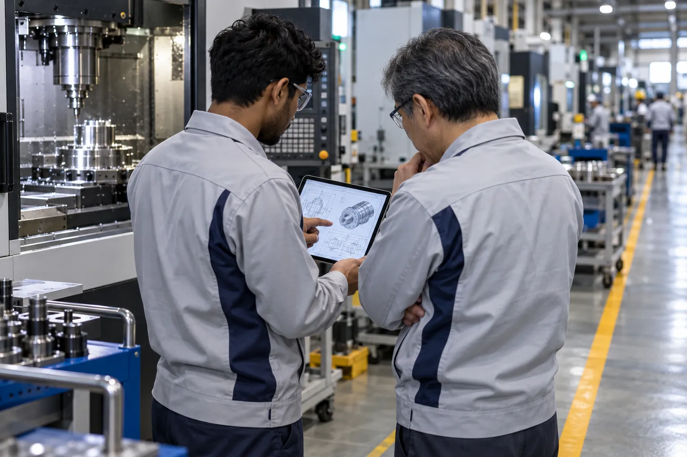

Solutions
地方の工場でも、
理系新卒を迎える方法があります
地方の工場や拠点で設計・生産技術の理系新卒が採れない場合、インドの理系大学から新卒の候補者を探し、インターンで一緒に働いて見極めてから採用する進め方があります。
About
応募を待つ採用から、
インドの大学へ探しに行く採用へ。
地方の工場や拠点で理系新卒が採れないのは、企業の魅力が足りないからとは限りません。理系学生の数が限られ、応募が大手や都市部に集まりやすい構造があるからです。
そこで、インドの理系大学から機械・電気電子などの専攻の学生を探し、インターンで一緒に働いて見極めてから迎える進め方があります。
Problem
地方の工場・拠点で、
よく聞く声
- 応募が来ない
- 理系新卒の求人を出しても、応募がほとんど来ない
- 説明会で興味を持ってもらえても、都市部や大手を選ばれる
- 後継者が育たない
- 設計や生産技術のベテランが、退職を迎える
- 中途採用でも、専門知識を持つ技術者が見つからない
- 新しい分野の若手がいない
- CADやEVなど、新しい分野の知識を持つ若手を迎えたい
原因は、地方の企業ほど不利になりやすい採用の構造にあります。
- イメージ
理系学生の数が限られている
設計や生産技術など専門職の求人に対して、候補者の数が足りなくなりがちです。
- イメージ

応募が都市部・大手に集まりやすい
学生が知っている企業や、通いやすい都市部の企業に応募が集中し、地方の企業は比べられる機会が少なくなります。
- イメージ

待つ採用だけでは届かない
求人サイトや説明会など応募を待つ方法では、地方の企業を知らない学生に情報が届きにくくなります。
Solution
探す、見極める、準備する。
3つの段階で迎えます
国内の応募を待つだけでなく、インドの理系大学から探しに行き、インターンで見極め、入社前のトレーニングで準備します。
-

インドの大学で、教職員との打ち合わせ要確認：大学名と掲載許諾 01 探す専攻と職種から逆算して、
候補者を探す設計なら機械工学、設備保全や制御設計なら電気電子工学というように、職種から必要な専攻を整理します。
インド工科大学（IIT）だけでなく、専門分野に強い理系大学を含むインド各地の大学から、貴社に合う学生を複数ご提案します。
-
代表と、学生たち要確認：掲載許諾 02 見極める一緒に働いてから決める
複数の大学から複数名がインターンを始め、一緒に働きながら技術力や職場との相性を確かめます。
学生もオンラインで実際の業務に取り組み、仕事の内容やチームを知ってから入社を考えられるため、入社後の「思っていたのと違う」を減らすことにつながると考えています。
-

イメージ工場で図面を確認する若手と先輩 03 準備する日本語と職場文化を、
入社前に学ぶ内定から入社までの期間に、日本語と日本の職場文化を学ぶ研修を行います。
日本人マネージャー向けの研修もあり、受け入れる側の準備も同時に進められます。
Prepare
地方の拠点で、
早めに決めておきたいこと
住まいや通勤の手段、生活の手続きは、誰が何を準備するかを採用を始める段階で決めておくと、入社前後の負担を分けやすくなります。
| 準備すること | 内容の例 | 〇〇〇〇の支援 |
|---|---|---|
| 住まい | 社宅や賃貸住宅の手配、家具や家電の用意 | ご相談時にご案内します要確認：担当範囲 |
| 通勤 | 公共交通の有無、自転車や送迎などの手段 | ご相談時にご案内します要確認：担当範囲 |
| 生活の手続き | 住民登録、銀行口座、携帯電話など | ご相談時にご案内します要確認：担当範囲 |
| 職場の準備 | 受け入れ部署、相談役（メンター）、任せる業務 | マネージャー向け研修・合同研修 |
専攻別のスキルと配属例は、インド理系人材のスキルで紹介しています。
Flow
無料相談から入社までの、
5つのステップ
全体の期間は、採用時期や在留資格の手続きによって変わります。要入力：標準的な期間
無料相談
職種・専攻・時期・人数をお伺いし、採用条件を整理します。要入力：期間の目安
貴社がすること
求める人物像と配属先を決める
候補者紹介・面接
条件に合う学生を複数ご提案し、オンラインで面接します。要入力：期間の目安
貴社がすること
書類の確認・面接
インターン
一緒に働きながら、相互に見極めます。要入力：期間の目安
貴社がすること
業務の用意・評価・内定の判断
内定・手続き
雇用契約を結び、在留資格の手続きを進めます。要入力：期間の目安
貴社がすること
雇用契約・申請書類の準備、住まいの検討
トレーニング・入社
日本語と職場文化を学び、来日・入社します。要入力：期間の目安
貴社がすること
合同研修への参加、受け入れ部署の準備
在留資格の手続きや入社前トレーニングには一定の期間がかかります。採用したい時期から逆算して早めに始めるほど、候補者の選択肢が広がります。詳しくは導入の流れをご覧ください。
地方の製造業の事例は、掲載の許諾を得たものから順に導入事例で紹介します。
Service
この進め方で使うサービス


FAQ
地方の製造業からの
よくある質問
地方の工場でも、インドの学生は入社してくれますか？
勤務地や仕事の内容を学生に伝えたうえで選考を進めることが大切です。インターンは、インドからフルリモートで行うのが基本です（来日してのインターンはご相談ください）。学生はオンラインで実際の業務に取り組み、仕事の内容やチームを知ってから入社を考えられます。
製造現場で日本語が使えないと困りませんか？
候補者の日本語のレベルには個人差があります。要確認：インターン時点の日本語レベルの目安（現サイトでは「そこそこ」）内定から入社までの期間に日本語と職場文化の研修を行います。業務で必要な日本語のレベルは職種ごとに異なるため、どの業務から任せるかも含めて、ご相談の際にすり合わせます。要確認：英語とやさしい日本語を組み合わせて業務を進められるか
住まいや生活の準備はどうすればよいですか？
住まいの手配や通勤の手段、住民登録などの手続きは、採用を始める段階で分担を決めておくと安心です。〇〇〇〇が担う範囲は、相談の際にご説明します。要確認：来日・生活の立ち上げの担当範囲
1名だけの採用でも相談できますか？
採用予定の人数に応じて、進め方をご相談いただけます。要入力：最少人数複数名の採用では、同じ時期に入社する仲間がいることで、入社後に相談し合える環境をつくりやすくなります。